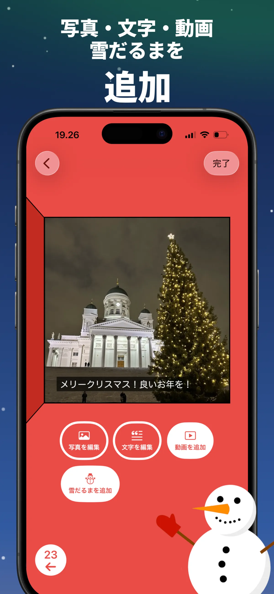

アドベントカレンダーの作り方 — スマホで簡単・無料・10分で完成
アドベントカレンダーを手作りしたいけれど、100均で材料を揃えて、切って、貼って、24個の袋に中身を詰める時間がない——そんな方におすすめなのがデジタルのアドベントカレンダーです。スマホひとつで作れて、紙のカレンダーには入れられない写真・動画・メッセージを窓の中に隠せます。
この記事では、無料アプリを使った一番簡単な作り方を紹介します。工作なし、ログインなし、所要時間は約10分です。
Advent Maker — アドベントカレンダー作成アプリ
24個の窓を自由にカスタマイズ · ログイン不要 · 無料
用意するもの
- iPhone・iPad・Macのいずれか（受け取る側も同様）
- 無料アプリAdvent Maker（登録・課金なし）
- 約10分と、入れたい写真やアイデア
ステップ1 — 新しいカレンダーを作る
Advent Makerを開いて「新しいカレンダー」をタップ。「アドベントカレンダー2026」や相手の名前などタイトルを付けると、12月1日〜24日の窓が並んだカレンダーができあがります。
ステップ2 — 24個の窓に中身を入れる
窓をタップして編集します。それぞれの窓に入れられるのは：
- 写真 — カメラロールから選んで、キャプションも追加可能
- 文字 — メッセージ、思い出、ちょっとしたクイズ
- 動画 — YouTubeの埋め込みにも対応
- 雪だるま — 触って遊べるインタラクティブなお楽しみ

1つの窓に写真＋キャプションの組み合わせが定番です。中身に迷ったら24日分のアイデア集をどうぞ。
コツ：窓は順番に埋めなくてOK。簡単な日から埋めて、12月24日（クリスマスイブ）の窓にはとっておきの1枚や動画を。
ステップ3 — カレンダーを共有する
完成したら「カレンダーを共有」をタップ。カレンダー全体が1つのファイルにまとまり、AirDrop・LINE・メールなどで送れます。受け取った人は無料アプリでファイルを開くだけ。どちらもアカウント登録は不要で、写真がサーバーにアップロードされることもありません。
ステップ4 — 毎日1つずつ窓を開ける
12月1日から毎日1つずつ窓が開けられるようになり、クリスマスまでカウントダウン。先の窓は開けられないので、「毎朝のお楽しみ」がちゃんと続きます。
手作り（工作）とデジタル、どっちがいい？
- 個人的：市販のお菓子より、自分の写真と言葉のほうが心に残る
- 無料：材料費・印刷代・送料ゼロ
- すぐ届く：遠くに住む家族や遠距離の恋人にも数秒で
- 何個でも：子ども用・祖父母用・友達用と、相手別に作れる
もちろん、お菓子入りの手作りカレンダーと組み合わせるのも素敵です。デジタル版は「離れた人に贈れる」「動画が入る」のが最大の強みです。
さっそく作ってみませんか？
無料 · 約10分で完成 · 相手は24日間楽しめます